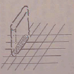
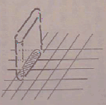

|  |

|
| 匹数 | 単体石板 | 二枚分石板 | 三枚分石板 |
| 2 匹 | 2000 | 1000 | 500 |
| 3 匹 | 5000 | 2000 | 1000 |
| 4 匹 | 10000 | 4000 | 2000 |
| 5 匹 | 50000 | 8000 | 4000 |
| 6 匹 | 1UP | 10000 | 6000 |
| 7 匹 | 50000 | ? | ? |
| 8 匹 | ? | ? | 100 |
| 名称 | 得点 | 備考 | |
| 100 pts |
| １面からでてくる白いやつです。 | |
| 100 pts |
| 時々煙草を吹かしてその間止まる、いやなやつ。 | |
| ケララ | 200 pts |
| 2面にいるピンクの怪獣です。たまに火を吹きます。 |
| トドリン | 100 pts |
| 12面に初登場する青色の怪獣です。 こいつは火の代りに吹雪を吹きます。 |
| ゴロリン | 300 pts |
|
３面からでてくる、アルマジロもどきです。丸まって移動します。 こいつはこのゲームでのキーキャラですね。 |
| ベカベカ | 250 pts |
| 見たところ、懐かしのＦＣディスク。（笑） |
| 大グモ | 1200 pts |
| 大クモです。１０の倍数の面でしかでません。 |
| ナチ坊 | 100 pts |
| 16面初登場の帽子をかぶったキャラ。 普通なら、２回つぶさないといけません。 |
| ダッグス | 100 pts |
| 31面に初登場。爆弾を持った犬もどき。 |
|  |
|
|
| 匹数 | 単体石板 | 二枚分石板 | 三枚分石板 |
| 2 匹 | 2000 | 1000 | 500 |
| 3 匹 | 5000 | 2000 | 1000 |
| 4 匹 | 10000 | 4000 | 2000 |
| 5 匹 | 50000 | 8000 | 4000 |
| 6 匹 | 1UP | 10000 | 6000 |
| 7 匹 | 50000 | ? | ? |
| 8 匹 | ? | ? | 100 |